FRC: Level-Set method
Contents
function [FRC] = FRC_level_set(obj, resModes, order, parName, parRange)
FRC level-set method
This function extracts the steady-state amplitude, phase shift and frequency
for periodically forced systems from Forced response curves. Current implementation assumes forcing of the form 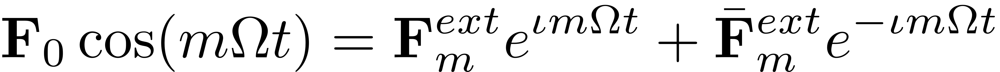. For two-dimensional SSMs, we use the normal form of paramaterization, where we choose the following form of autonomous reduced dynamics as
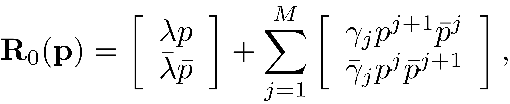
and assuming that the  -th harmonic of forcing frequency is nearly resonant with the modal subspace eigenvalues, i.e., 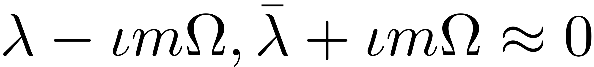. Denoting 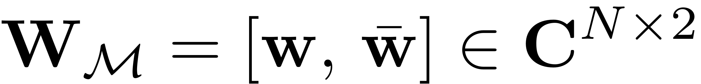, we obtain the leading-order, non-autonomous reduced dynamics using the normal form parametrization as
-th harmonic of forcing frequency is nearly resonant with the modal subspace eigenvalues, i.e., 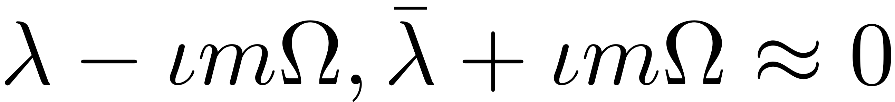. Denoting 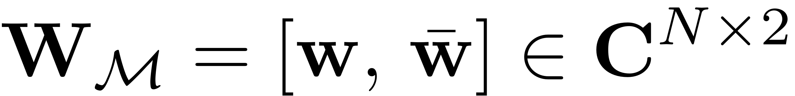, we obtain the leading-order, non-autonomous reduced dynamics using the normal form parametrization as
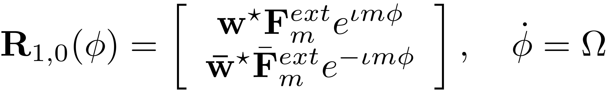
We are able to explicitly express the forced response curve as the zero level set of the functions
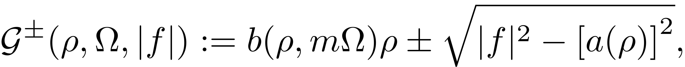
where
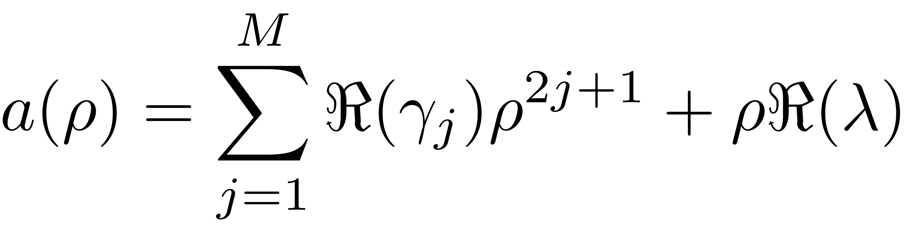
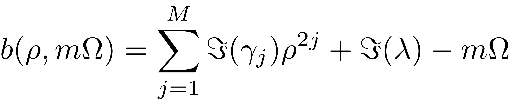
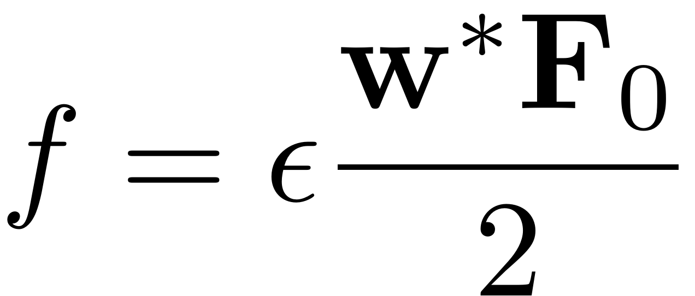
[FRC] = FRC_level_set(obj, resModes, order, parName, parRange)
- obj: instance of SSM class
- resModes: mode pair over which SSM is constructed
- order: approximation order up until which SSM is computed
- parName: parameter name in which FRC is constructed
- parRange: range of said parameter
- FRC: Forced Response Curve data struct
See also: EXTRACT_FRC, FRC_CONTEP, FRC_CONTPO
dimModes = numel(resModes); assert(dimModes==2,'levelset method for FRC extraction is valid only for 2-dimensional SSMs. Please use the continuation method') % compute two dimensional autonomous SSM obj.choose_E(resModes) [W0, R0] = obj.compute_whisker(order); % autonomous reduced dynamics coefficients gamma = compute_gamma(R0); lambda = obj.E.spectrum(1); % get options [nt, nRho, nPar, rhoScale, nPsi, outdof, saveIC] = ... deal(obj.FRCOptions.nt, obj.FRCOptions.nRho, ... obj.FRCOptions.nPar, obj.FRCOptions.rhoScale, obj.FRCOptions.nPsi,... obj.FRCOptions.outdof, obj.FRCOptions.saveIC); % Initialize FRC as a struct array par = linspace(parRange(1),parRange(end), nPar); FRC = cell(nPar,1);
Grid for evaluation of
switch lower(parName) case 'freq' % vary Omega keeping epsilon constant Omega_init = par(1); omegaRange = par; epsilon_init = obj.System.Fext.epsilon; case 'amp' % vary epsilon keeping Omega constant Omega_init = obj.System.Omega; omegaRange = Omega_init; epsilon_init = max(parRange); % biggest epsilon for constructing grid end % leading-order modal forcing coefficient f = compute_f(obj,W0,R0,Omega_init); [rho, psi, RHO, PSI] = compute_polar_grid(omegaRange,epsilon_init,gamma,lambda,f,rhoScale, nRho, nPsi);
Obtain FRC
BaseExcitation = obj.System.Options.BaseExcitation; % For parallel loop without contribNonAuto if ~obj.Options.contribNonAuto if obj.FRCOptions.omDepNonAuto [~, R1_Auto] = obj.compute_perturbed_whisker(order-1,W0,R0,par(1)); else % ignore dependence of coefficients on omega [~, R1_Auto] = obj.compute_perturbed_whisker(order-1,W0,R0,obj.FRCOptions.omDepNonAutoVal); end else R1_Auto = []; if obj.FRCOptions.omDepNonAuto % Recompute ROM for every Omega R1_Nonauto = []; W1_Nonauto = []; else % ignore dependence of coefficients on omega [W1_NonAuto, R1_NonAuto] = obj.compute_perturbed_whisker(order-1,W0,R0,obj.FRCOptions.omDepNonAutoVal); end end for j = 1:nPar Omega = []; % To avoid 'Uninitialized Temporaries' warning of Parallel Computing Toolbox epsilon = []; % setup parameters switch lower(parName) case 'freq' % vary Omega keeping epsilon constant Omega = par(j); epsilon = epsilon_init; case 'amp' % vary epsilon keeping Omega constant epsilon = par(j); Omega = Omega_init; end if BaseExcitation epsilon = epsilon*Omega^2; end if obj.Options.contribNonAuto % compute non-autonomous SSM coefficients if obj.FRCOptions.omDepNonAuto [W1_NonAuto, R1_NonAuto] = obj.compute_perturbed_whisker(order-1,W0,R0,Omega); end R1 = R1_NonAuto; W1 = W1_NonAuto; else W1 = []; R1 = R1_Auto; end % reduced dynamics on the grid [rhodot, rhopsidot, eta] = compute_reduced_dynamics_2D_polar(RHO,PSI, ... lambda, gamma, R1,Omega,epsilon); % Numerical computation of fixed points of the reduced dynamics [rho0, psi0] = compute_fixed_points_2D(rho, psi, rhodot, rhopsidot); % Stabilty calculation stability = check_stability(rho0,psi0,gamma,lambda,epsilon,R1); % output data structure FRC{j} = compute_output_polar2D(rho0,psi0,stability,epsilon,Omega*ones(size(rho0)),W0,W1,eta,nt, saveIC, outdof); end FRC = cat(1,FRC{:});
end
function [rho, psi, RHO, PSI] = compute_polar_grid(omegaRange,epsilon,gamma,lambda,f,rhoScale, nRho, nPsi)
Explicit quadratic approximation of the backbone curve
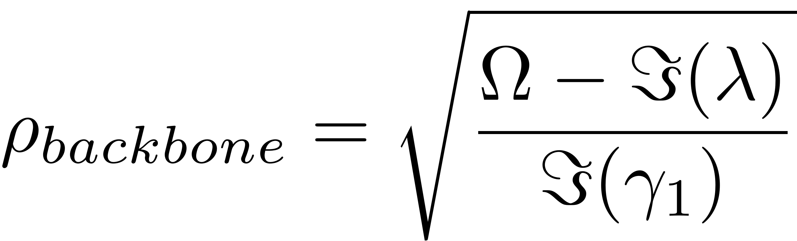
rhomaxBB = max(real(sqrt((omegaRange - imag(lambda))/imag(gamma(1))))); rhomaxlin = full(abs(epsilon * f/real(lambda))); if isempty(f) assert( rhomaxBB ~= 0, 'Estimation of maximal amplitude failed') rhomax = rhoScale * rhomaxBB; else if rhomaxBB ~=0 % heuristically choose maximum value of polar radius as follows rhomax = rhoScale * min(rhomaxBB, rhomaxlin); else rhomax = rhoScale * rhomaxlin; end end %compute grids rho = (rhomax/nRho) * (1:nRho); psi = (2*pi/nPsi) * (0:nPsi-1); [RHO,PSI] = meshgrid(rho,psi);
end function [f] = compute_f(obj,W0,R0,Omega) % compute non-autonomous SSM coefficients [~, R1] = obj.compute_perturbed_whisker(0,W0,R0,Omega); f = nonzeros(R1(1).R(1).coeffs); % leading-order modal forcing coefficient end